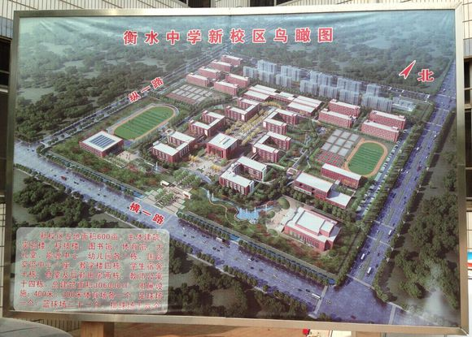
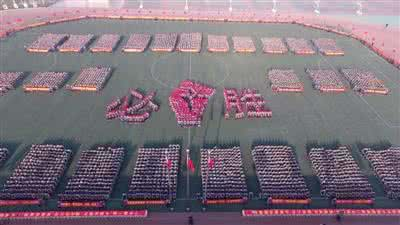
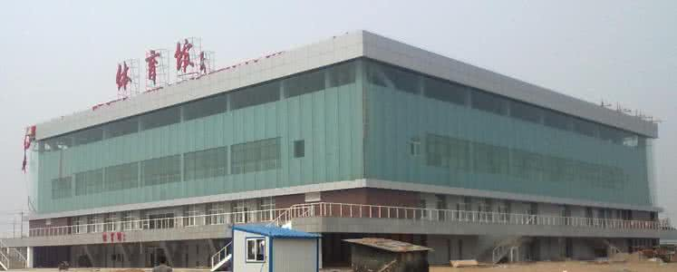
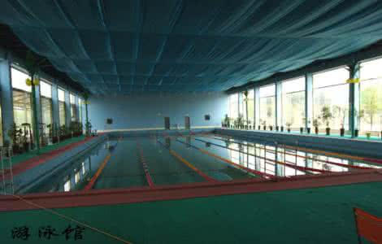
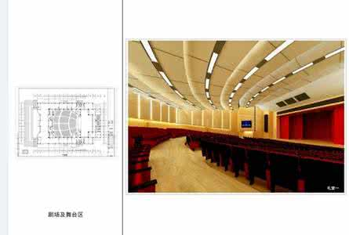

学校全景
衡水中学于2013年启动新校区“衡水市第一中学”建设，位于衡水市滨湖新区横一路、纵一路交叉口，占地总面积600亩，主体建筑包括教学楼、办公楼、实验楼、体育馆、科技楼、大礼堂、幼儿园、能源中心、餐饮中心、学生宿舍楼、标准运动场、国际交流中心等于2014年底竣工。

教学楼
配以国际先进教学设备，如校园网络系统、广播视频系统、多媒体教学系统、教学观摩(电子监考)系统等。每间教室都配有两台饮水机、三台竖式空调
、挂灯近20个。每间教室外都有各自的学生书橱和洗手间以及饮水设备。每间教室后都有一个小的交流室，用于放试卷和同学老师的交流。

操场
衡水中学的操场为800米操场，用于部分学生的早操，还有的学生的跑操地点是图书馆前面的类似于小公园的一周，围着两个食堂周围跑的情况也是有的。还有就是学校里面要举行的军训、运动会以及高考助力，都是在这里。看台上五色旗迎风招展，神采奕奕。高考前的呐喊更是响彻衡中。

体育馆
体育馆位于操场南侧，4层，占地长度正好和操场宽度相同。室内设备有短跑赛道、篮球场、排球场、乒乓球场、羽毛球场。里面还有体育老师自己的办公室以及洗手间、更衣室、休息室、浴室。学生可以在老师的允许下进入体育馆自由运动，同时，学生还可以凭借饭卡借用运动设备。

游泳馆
游泳馆于2015年开始建立，并在2016年竣工。位于操场北侧，用于体育特长生的平时训练，馆内泳池里的水都是经过专业的净化，以保证用水安全。同时馆内也有与大型游泳馆相同的供运动员使用的洗手间、更衣室、休息室。
游泳馆的室内没有隔绝视野的墙壁，代替的是各种透明玻璃。

博雅馆
博雅馆位于整个学校的西南角。阶梯式的座位可以供2000人一起开会，内部含有舞台应有的各种设备：音响、灯光、摄像机。用于各种节日的庆祝和艺术生的表演。还有每次调研考试后的表彰、演讲、反省。在这里会有学霸的经验分享，也会有渴望成功者的声声誓言，还有各地讲师的教导。

 强大的教师阵容
强大的教师阵容